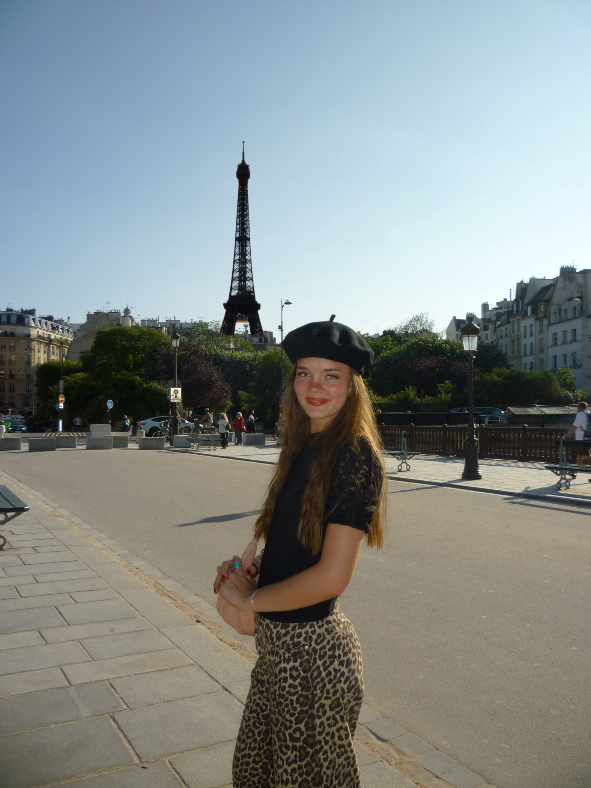
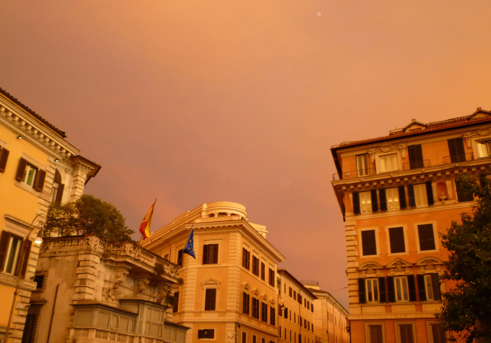

FROM-SCRATCH PAGE
Why I love travel photography
Travel photography mixes planning, creativity, and memory-making. I love how one photo can hold a full feeling: a city at blue hour, a mountain after a storm, or a family moment that would have been forgotten without a camera.

What makes it fun
It is part art, part storytelling, and part problem solving. You have to notice light, movement, framing, and timing all at once.
What I want to improve
I want to get better at manual settings, stronger compositions, and capturing travel moments that feel polished but still real.
Favorite kinds of photos
Architecture, city details, mountains, candid family moments, and colorful scenes that instantly bring a trip back to life.
My travel photography game plan
When I travel, I like to think in layers. First I get the classic photo. Then I look for smaller details that tell the deeper story of the place.
-
Big must-have shots
- One wide establishing image of the location
- One clean portrait or family photo
- One skyline, mountain, or landmark image at golden hour
-
Storytelling details
- Signs, doors, food, tickets, and textures
- Hands holding something local
- A candid moment that feels unplanned and real
-
Creative extras
- Reflections in windows or puddles
- Motion blur in busy streets
- Night shots with dramatic contrast
That is why I built my web app around exposure settings. It lets me practice matching ISO, aperture, and shutter speed to different situations before I travel.

One of the reasons I love photography is that it helps ordinary or even difficult moments become memorable later.
Video inspiration
This embedded YouTube video is here as part of the assignment, but it also fits the page because improving travel photos is one of my main goals.
Extra image

A local SVG image like this helps prove the page uses images beyond anything from a Bootstrap theme.
Dream shot list + live Tableau visualization
Below is a live Tableau visualization embedded directly on the page. It is interactive, so viewers can click and explore the dashboard instead of just seeing a screenshot.
1. Blue hour city street
Wet pavement, glowing lights, and people moving through the frame.
2. Quiet early-morning architecture
A clean composition before crowds fill the space.
3. Mountain weather drama
Clouds, light, and contrast all changing at once.